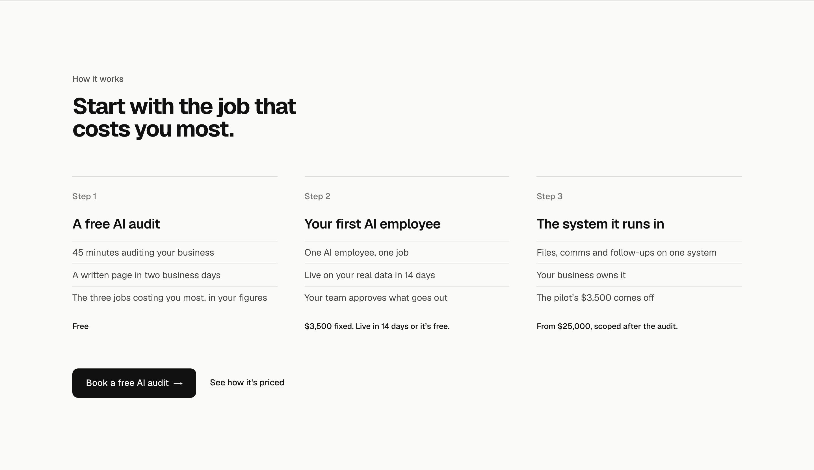
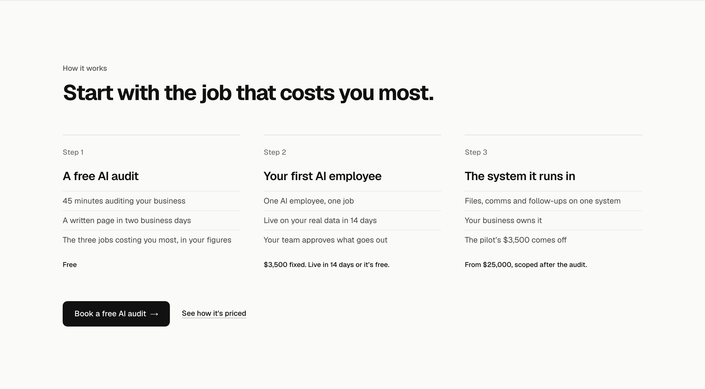

How it works, detail 2: the heading size
The whole section as built, drawn on the real homepage at 1440 wide. Only the heading changes. For scale: the hero headline above it is 72px and the step titles are 24px.
Today52px on 2 lines. For comparison, not an option.
1. Smaller40px on 2 lines. The hero’s 72px stays the only big type on the page and the three steps carry the section; the scale steps down 72, 40, 24. Recommended.

2. Bigger64px on 2 lines, close to the hero’s 72px. Each section opens as loudly as the page does; the strongest break between sections, and the least difference between the hero and everything after it.
3. One line44px across the width on 1 line, so the heading reads in one glance and sits over all three columns instead of the first one.
